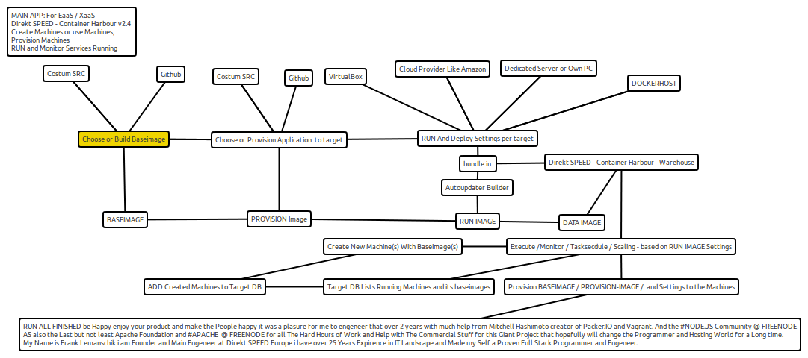

The Main Homepage of Container Harbour Software Written by Direkt SPEED Europe to manage Any Server type: Dedicated, Virtual, Container. it can Manage. Monitoring, Deployment, Scaling, Storage. and with the Direkt SPEED setup-tools it gets Templates for Services Like PaaS or EaaS XaaS. Its Free for use and Contribute too. Payed Support and Extra Services
Here is a representativ MAP How it Works it is at present a 3 steps solution
You Define and Build what gets deployed in 3 images that all are forming the so called RUN Image a RUN Image has All Data Configs and also includes where and how it gets executed. After that you can enjoy your running service at present all works from the command line we are building interfaces and api's at present if you whant you can join us or contribute to me i will give every one that helps his deserved credits and also will offer him some money as soon as this will get some from any where at present i am taking it all my own i am the One and Only Main Creator Author and Coder as also Sponsor.
